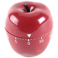
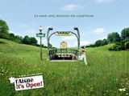
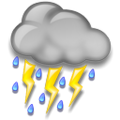
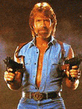

19 décembre 2006
Aujourd’hui je faisais un retour d’expérience sur la mise en oeuvre d’un Wiki, pour un gros programme qui démarre.
Petite démonstration, j’insiste sur l’importance de capitaliser d’abord, organiser ensuite. De toute façon l’outil de recherche plein texte permet de s’y retrouver. Les réactions sont intéressantes.
On m’interroge sur les avantages d’un Wiki par rapport à un Quickplace (Lotus), à un Sharepoint (Microsoft). Je souligne l’esprit d’ouverture qui facilite l’appropriation, et la facilité de création de nouvelles pages qui limite au maximum les freins à la capitalisation.
16 décembre 2006
L’Internet avant c’était des contenus qu’une personne écrivait et que d’autres gens venaient lire.
Au cours des années 90 c’est devenu participatif : après les forums où les visiteurs pouvaient s’ébattre sous bonne garde on les a laissés ajouter des commentaires publiés en direct, voter, etc. Ce n’est pas ça qui a provoqué l’explosion d’Internet, mais les sites participatifs sont plus fréquentés que les autres (en interne IBM, les blogs sont 6 fois plus fréquentés que le reste de l’Intranet) : les internautes veulent participer, ou regarder participer les autres, c’est une autre histoire…
Et puis il y a 5 ans les Wikis sont arrivés.
8 décembre 2006
Le Web 2.0 est en plein essor. Ça me faisait sourire, au début. Ça venait après le Wap, après la nouvelle économie. Et puis petit à petit l’évidence est apparue ; le Gartner avait raison avec son Hype cycle : après la vallée des désillusions émerge la pente de l’illumination… pour ceux qui ne connaissent pas :
Quand on a dit ça on n’a pas dit grand chose, alors revenons à nos boutons.
21 octobre 2006
Les températures extrêmes rendent fous. Regardez les Finlandais et leurs sports insolites : je ne m’attarderai pas sur le porter d’épouse ou le lancer de portable (à quand l’inverse ?), et ne retiendrai que le championnat du monde d’endurance au sauna où des mastodontes suradipeux parviennent à tenir plus de 13 minutes dans une étuve à 110°C ! J’avoue que je ne sais pas comment c’est physiquement possible : j’étais moi-même dans un sauna il y a trois jours, à 73°C seulement et environ 30% d’humidité - il faut savoir que dans un sauna la chaleur vient de pierres brûlantes sur lesquelles on jette de temps en temps une louchée d’eau pour ajuster l’humidité. Eh bien je peux vous dire que c’était déjà assez insupportable, et entre deux bouffées d’air brûlant je me demandais s’il fallait mieux que ce soit très humide ou très peu.
13 octobre 2006

Vers la fin du mariage khmer, les deux mariés sont assis côte à côte, devant un coussin sur lequel est posée une épée. Le fourreau est du côté de la femme, le manche du côté de l’homme. En effet une autre légende raconte qu’un jeune homme, son apprentissage accompli, s’apprêtait à rentrer chez lui. La route promettait d’être longue. Avant qu’il ne parte son maître lui donne une boîte de bois dur en forme de grosse boule, et lui ordonne de ne l’ouvrir qu’une fois arrivé chez lui, et surtout pas avant, quoi qu’il arrive.
8 octobre 2006
J’étais l’autre jour à un mariage cambodgien. À un moment, le marié offre un cadeau à trois parents. Une légende raconte en effet que quatre jeunes hommes, quittant leur maître, rentraient chez eux. Chacun avait un don : le premier était un devin, le second un tireur d’élite, le troisième un nageur hors pair, et le quatrième avait le pouvoir de ressusciter les morts.
1 octobre 2006

Une bande de joyeux Picards, publicitaires en l’occurrence, m’a ce matin dans le métro jeté un sourire sur les lèvres. Leur technique est simple : une affiche 4 par 3, la photo d’une verte prairie, et ce slogan qui scotche : « l’Aisne, it’s Open! »
Alors déjà, et je le dis sans aucune distance parigote autre que géographique, le nom de ce département m’a toujours fait sourire : autant j’ai été surpris que les Côtes du Nord se rebaptisent Côtes d’Armor en 1990, autant je suis amusé par la volonté de l’inénarrable Georges Frêche de renommer le Languedoc-Roussillon en Septimanie, autant si l’Aisne voulait changer de nom je comprendrais.
4 septembre 2006

Vite, un clavier, ils vont pas tarder à me retrouver. Mais tu dois savoir. Ça aboie dehors. Vite. Ouf, fausse alerte. Toute cette flotte, c’est eux. J’ai marché pieds nus dans le caniveau pour perdre les chiens. Je suis pas sûr que ça marchera, ils vont me retrouver. Pas de temps à perdre. J’ai découvert un truc incroyable. J’étais dans le train, ils étaient assis derrière moi. Ils travaillent pour eux. Ils discutaient, la pluie et le beau temps, détendus, normal. Et puis au détour d’une phrase, j’ai tout compris. La pluie et le beau temps, c’est ça le truc. Un truc énorme. Bon sang comment j’ai pu ne pas le remarquer ? Comment t’as pu ne pas le remarquer ? Ça crevait trop les yeux. Merde, une sirène ! Les flics sont avec eux, forcément. L’autre jour en passant devant Météo France j’ai vu trois uniformes qui contemplaient les écrans. Sûrs d’eux, du genre « Toi le soleil tu vas pas faire ton mariole longtemps ! » Mais comment j’ai pas deviné ?! Moi d’août, douze degrés, trois semaines sans voir le ciel. Merde quoi ! Tu vois rien ? Des records d’audience pour Fort Boyard, Dechavanne et l’Île de la tentation ! … Non ? Mais bon sang c’est les gars de la télé !
21 août 2006

Héros de 24, l’haletante busherie de Fox, Jack Bauer est devenu une icône justicière, une sorte de nouveau Rambo, ou plutôt de nouveau Chuck Norris. Il inspire en effet une jolie collection de petites phrases (lien cassé). Extrait :
- Quand Google ne trouve pas quelque chose, il demande de l’aide à Jack Bauer.
- Jack Bauer a tué tellement de terroristes qu’à un moment, le 5eme fugitif le plus recherché par la CIA était un adolescent de 18 ans en Malaisie qui avait téléchargé les Choristes.
- Jack Bauer est capable d’éliminer la grippe aviaire en jouant au tir au canard.
30 juillet 2006
Je suis assis sur une étagère dans le train. En face un vieil homme barbu me propose de la poudre de Betel Nuts. Sous lui une femme voilée demande à un jeune homme de lui fermer la fenêtre. À deux mètres et dix personnes de là, un sosie de Groucho Marx a les deux poignets tenus par un moustachu jovial qui lui fait taper dans ses mains. Près d’eux une fillette dort sur le bedon d’un vieil homme habillé tout en blanc.

{kind=link}